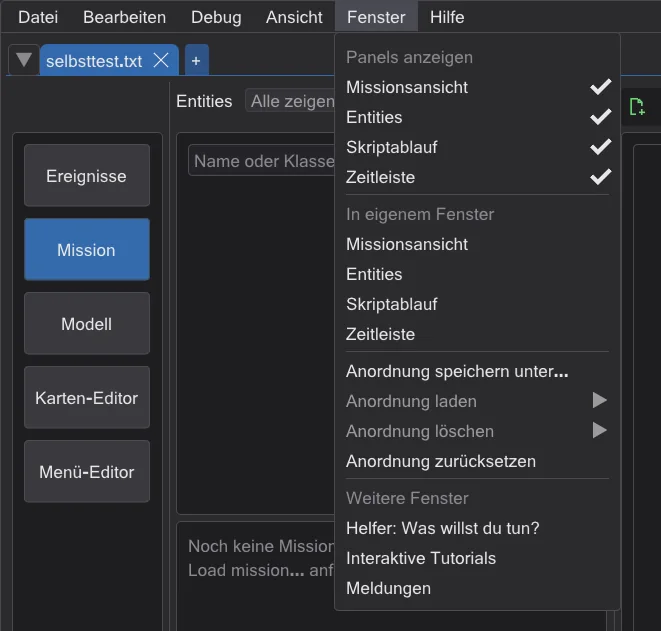
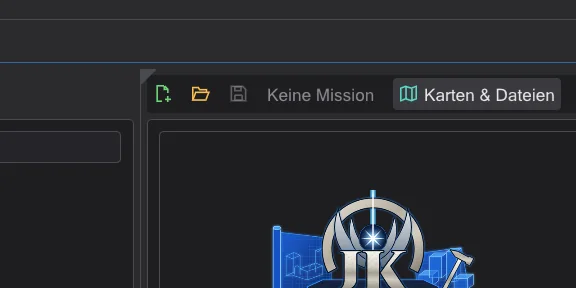
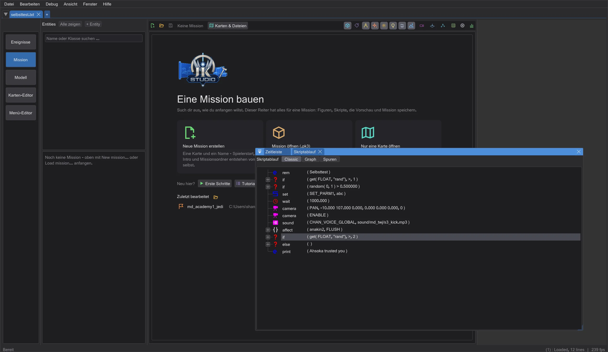
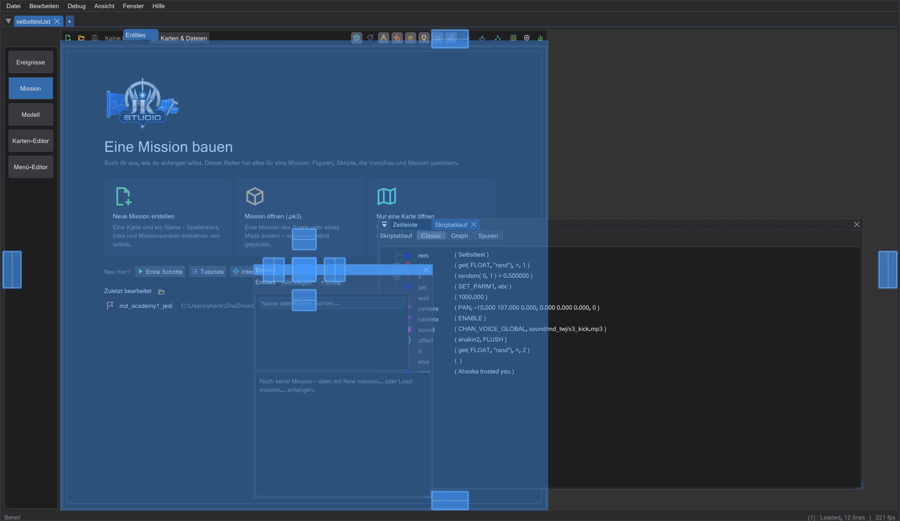

Fenster und Bildschirme anordnen
Jedes Panel an jede Stelle legen - neben, unter oder als Reiter zu einem anderen im Hauptfenster oder in ein eigenes Fenster auf einem zweiten Bildschirm - und die Anordnung unter einem Namen speichern, je Bereich.
Jeder Bereich - Ereignisse, Mission, Modell, Karten-Editor und Menü-Editor - besteht aus Panels, die im Hauptfenster angedockt sind. Solange du nichts verschiebst, steht jedes Panel an seinem Platz: die Standardanordnung, auf den Punkt genau wie vorher, mit denselben Trennlinien.
Ein Panel herausnehmen#

- 1
Öffne das Menü Fenster (im Karten-Editor das letzte Menü, hinter denen von NetRadiant) und klicke unter In eigenem Fenster das Panel an, zum Beispiel die Zeitleiste. Es wird ein eigenes Fenster; sein Platz im Hauptfenster geht an die Nachbarn - die Missionsansicht wird höher.
- 2
Oder zeige auf die linke obere Ecke eines Panels: ein kleines Dreieck erscheint. Ziehst du es weg, kommt das Panel mit; ein Klick darauf zeigt stattdessen den Reiter des Panels.
- 3
Ziehe das Fenster an seiner Titelleiste aus dem Hauptfenster: es wird ein echtes Windows-Fenster und kann auf einen zweiten Bildschirm. Es zeichnet dort weiter - die 3D-Ansichten und das Echtzeit-Licht des Karten-Editors eingeschlossen. Dateien lassen sich auf ein solches Fenster ziehen wie auf das Hauptfenster (etwa ein Modell auf die XY-Ansicht des Karten-Editors oder eine .menu-Datei auf die Fläche des Menü-Editors).

Panels anzeigen blendet ein Panel ganz aus; auch sein Platz geht an die Nachbarn. Der Abschnitt Weitere Fenster öffnet den Helfer, die Tutorials und die Meldungen - sie sind ohnehin eigene Fenster.
Panels zusammensetzen und überall andocken#

Ziehe das Fenster eines Panels über ein anderes Panel - in dessen eigenem Fenster oder im Hauptfenster: es erscheinen Markierungen. Auf der mittleren abgelegt, werden beide zu Reitern; auf einem Pfeil steht es daneben, darüber oder darunter. So kommt der Script Flow unter die Kartenansicht, die Ebenenliste wird ein Reiter der Kartenansicht, die Kamera des Karten-Editors rückt unter die XY-Ansicht - wie in Blender. Die Trennlinien zwischen angedockten Panels lassen sich dann ziehen, ein Reiter lässt sich wieder herausziehen. Das geht mit den Panels eines Bereichs; Dialoge wie Suchen bleiben für sich.

Ein Panel wieder andocken#
- Schließe sein Fenster mit seinem x - das Panel kehrt an seinen Platz zurück, nichts geht verloren. Gibt es den Platz nicht mehr, weil du den Bereich umgebaut hast, dockt es neben seinem Nachbarn an, und deine Anordnung bleibt.
- Oder klicke das Panel unter In eigenem Fenster noch einmal an.
- Oder lege es auf einer Markierung im Hauptfenster ab, wo du es haben willst.
- Anordnung zurücksetzen bringt alle Panels des Bereichs zurück in die Standardanordnung.
Anordnungen speichern, laden, zurücksetzen#
Jeder Bereich hat seine eigenen Anordnungen. Anordnung speichern unter merkt sich, wo jedes Panel steht - im Hauptfenster angedockt, in einem eigenen Fenster, ausgeblendet -, wo diese Fenster liegen, auf welchem Bildschirm und wie sie zusammengesetzt sind. Anordnung laden wechselt zu einer gespeicherten Anordnung, Anordnung löschen entfernt eine, Anordnung zurücksetzen bringt jedes Panel des Bereichs zurück in die Standardanordnung. Die laufende Anordnung jedes Bereichs steht in den Einstellungen und ist beim nächsten Start wieder da.
Wenn sich Bildschirme ändern#
- Ein Bildschirm wird abgezogen oder anders angeordnet: Fenster, die darauf standen, kommen auf den Bildschirm des Hauptfensters zurück, in ihrer Größe.
- Ein Bildschirm ist kleiner als ein Fenster: das Fenster wird gerade so weit verkleinert, dass es passt.
- Ein Fenster kommt auf einen Bildschirm mit anderem Maßstab (100 %, 150 % ...): Größe und Schrift folgen dem Maßstab dieses Bildschirms.
Karten-Editor#
Die Anordnungen von NetRadiant bleiben die Vorgabe (Einstellungen > Layout): Regular, Regular Left und Split (auch mit frei belegten Plätzen und mit dem eingebauten Entity-Fenster) haben je ihre Standardanordnung mit genau NetRadiants Größen und NetRadiants Trennlinien - Ziehen, Einklappen und Maximize view gehen wie in NetRadiant. Eine herausgenommene Ansicht gibt ihren Platz an die Nachbarn wie eine ausgeblendete Ansicht in NetRadiant; in ihrem eigenen Fenster zeichnet sie alles, was sie im Hauptfenster zeigt, ein Klick hinein macht sie zur aktiven Ansicht, Tastenkürzel und Umschauen gelten dann in diesem Fenster - auf jedem Bildschirm. Ist eine Ansicht woanders angedockt (etwa als Reiter der Kamera), gelten ImGuis Trennlinien; Anordnung zurücksetzen bringt NetRadiants Anordnung zurück. In Floating schweben die Ansichten ohnehin.
Menü-Editor#
Beide Layouts des Menü-Editors bestehen aus Panels: mit den Reitern rechts Einzelne Elemente, Fläche und die Spalte Hierarchie, Text, Eigenschaften; mit dem Text unten (Einstellungen) die Bausteine mit der Gliederung, die Fläche, Eigenschaften und Text-Editor - etwa die Fläche groß auf einem zweiten Bildschirm, während der Text im Hauptfenster bleibt.
Fehlerbehebung#
- Ein Panel ist verschwunden oder die Anordnung durcheinander: Fenster > Anordnung zurücksetzen bringt die Standardanordnung des Bereichs zurück.
- Das Andocken im Hauptfenster macht auf deinem Rechner Probleme: starte JK Studio mit der Umgebungsvariable
BHED_DOCKSPACE=0(etwa in einer Eingabeaufforderungset BHED_DOCKSPACE=0, dannjkstudio.exeaus derselben Eingabeaufforderung). Dann steht jedes Panel wieder an seinem festen Platz im Hauptfenster und lässt sich nur in ein eigenes Fenster nehmen, wie in früheren Fassungen; ein Panelfenster auf seinem alten Platz losgelassen dockt wieder an. Deine Anordnungen bleiben erhalten.